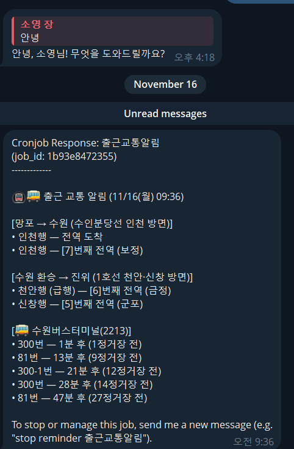

COMMUTE ALERT · 7주차 과제01 / 04 · 문제
출근 교통 알림
집을 나서기 전마다
지하철 앱과 버스 앱을 번갈아 연다.
필요한 것만 한 통으로 받고 싶었다.
- 01환승 경로 — 망포(수인분당선) → 수원 → 진위(1호선)
- 02안 가는 열차 — 서동탄·병점·오산행은 진위까지 가지 않는다
- 03매일 반복 — 평일 아침마다 같은 조회를 한다
장소영 · 특이점 빌더스공공데이터 오픈 API로 만든 일상 자동화
WHAT I BUILT02 / 04 · 만든 것
매일 아침 6:40, 출근길이 먼저 온다
- 01공공 오픈 API 두 곳공공데이터포털 TAGO 버스도착정보 · 서울 열린데이터광장 실시간 지하철 도착정보
- 02Claude Code로 만든 Python 스크립트API를 불러 진위까지 가는 열차와 곧 오는 버스만 골라 글로 정리
- 03Hermes 예약 작업평일 06:40 · LLM 없이 스크립트 출력을 그대로 전달(no-agent)
- 04텔레그램으로 도착봇이 보낸 한 통으로 열차와 버스를 함께 확인
- 데이터
- 버스 도착 공공데이터포털 TAGO
지하철 실시간 서울 열린데이터광장실시간이 안 되면 TAGO 지하철 시간표로 대신 - 언제
- 평일 오전 6시 40분Hermes cron 40 6 * * 1-5
- 무엇을
- 망포 → 수원, 수원 → 진위 열차 3개씩
수원버스터미널(2213) 버스 5대
공공데이터포털열린데이터광장Hermes cronTelegram
RESULT03 / 04 · 결과

실제로 받은 알림
예약 작업을 바로 한 번 실행해서 받은 메시지
- 01지하철 — 방면별로 진위까지 가는 열차만이 구간은 API가 분 단위를 주지 않아 “몇 번째 전역”으로 나온다
- 02버스 — 몇 분 후, 몇 정거장 전수원버스터미널(2213) 정류장 기준
- 03키·토큰 없음메시지와 캡처 어디에도 인증키와 봇 토큰이 나오지 않는다
DETAILS04 / 04 · 신경 쓴 점
필요한 것만, 끊기지 않게
- 01진위까지 가는 열차만1호선은 종착역으로 걸러 서동탄·병점·오산행을 뺐다
- 02실시간이 안 되면 시간표로열린데이터광장 조회가 실패하면 공공데이터포털 TAGO 시간표로 대신 보여 준다
- 03키는 스크립트 밖에인증키는 별도 .env 파일에서 읽기만 하고 스크립트에는 적지 않았다
- 04LLM 없이 그대로 전달스크립트 출력이 곧 메시지라서 빠르고 내용이 바뀌지 않는다
- 남은 것급행 정차 확인급행이 진위에 서는지는 아직 확인하지 못했다
- 남은 것꺼지지 않는 컴퓨터지금은 내 컴퓨터가 켜져 있어야 알림이 온다
장소영 · 특이점 빌더스7주차 과제: 공공데이터 오픈 API로 일상 자동화